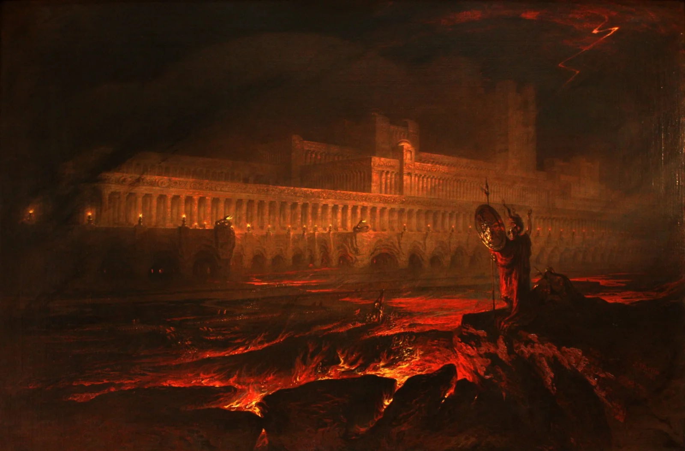
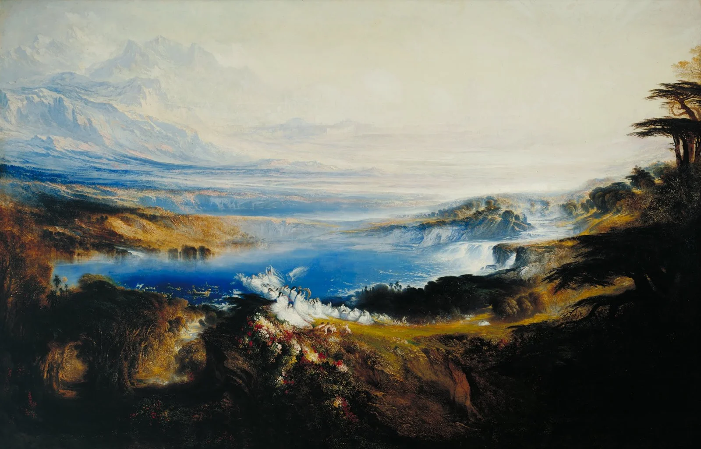

In 1825, a Northumbrian painter with no formal training and a taste for catastrophe began work on the most ambitious print series of the English Romantic period. John Martin was forty-six. He had already burned Babylon, drowned Pharaoh's army, and toppled Belshazzar's palace across canvases the size of bedroom walls. Now he turned to Milton.
The project consumed him for two years. Martin produced twenty-four mezzotint illustrations for Paradise Lost, each one a theatre of smoke and geometry. The prints sold well. Collectors liked the spectacle. But something else was happening in these plates, something critics at the time noticed without quite naming. Martin's Hell did not look like the Hell anyone had seen before. It looked like a city.
Born in 1789 in Haydon Bridge, Northumberland, Martin grew up at the edge of England's industrial revolution. His older brother Jonathan was a religious fanatic who later set fire to York Minster. John channelled similar intensity into paint. By the 1820s, he had become the most popular painter in Britain, more widely known than Constable or Turner, though the Royal Academy kept him at arm's length. His canvases were enormous, his subjects were apocalyptic, and his sense of scale bordered on the geological.
What set Martin apart from other painters of the sublime was his relationship to engineering. He spent years designing plans for London's sewage system and the Thames embankment. He proposed a railway along the coast. These were not hobbies; Martin believed infrastructure was a moral project, that cities could be saved through better plumbing and wider streets. When he painted the halls of Pandemonium, he drew on the same spatial logic he applied to water mains.
Hell as architecture
The mezzotint process suited Martin's vision. Working on copper plates with a rocker and a scraper, he could build tonal gradations impossible in line engraving: deep blacks fading into fog, pillars dissolving into murk. His Pandemonium is a forest of columns receding into orange haze. The vaulting could belong to a railway terminus or a pumping station. Satan, tiny at the centre, presides over a parliament of the damned from a throne that looks like it was designed by an engineer, not a theologian.

This is the tension at the heart of Martin's work. His subject matter is biblical and Miltonic: fallen angels, celestial war, the loss of paradise. But his visual language belongs to the age of iron. The arches in his Hell echo the new railway bridges then spreading across England. His abysses have the depth of mine shafts. Fire in his paintings behaves like furnace light, not brimstone.
Edmund Burke had argued in 1757 that the sublime depends on obscurity, vastness, and a kind of productive terror. Martin took this literally. He made pictures so large and so dark that viewers reported feeling dizzy. One critic called his work "the landscapes of a fever dream." Another, less generous, called them "theatrical scene-painting on a colossal scale." Both were right.
Whatever is fitted in any sort to excite the ideas of pain and danger, that is to say, whatever is in any sort terrible, is a source of the sublime.
Edmund Burke, A Philosophical Enquiry, 1757
Martin's Satan is not Milton's Satan, not exactly. Milton gave the fallen angel eloquence and wounded pride. Martin gave him scale. In the mezzotints, Satan stands at the edge of chasms so vast that the figure becomes almost abstract, a dark vertical against an infinite horizontal. The moral weight of the character is expressed through proportion. Satan is significant because he is small against something enormous, and because he does not flinch.
This was new. Earlier illustrators of Paradise Lost, from Louis Cheron to Henry Fuseli, had focused on the body: Satan's muscles, his wings, his expression of torment. Martin eliminated the body almost entirely. What remained was posture and position. A silhouette on a cliff. A speck against a glowing sky. The figure's meaning came from where it stood, not from what it looked like.
The afterlife of the sublime
Martin's influence outlasted his reputation. By the time he died in 1854, critical opinion had turned against him. Ruskin dismissed his work as meretricious. The Pre-Raphaelites preferred botanical precision to volcanic spectacle. Martin's canvases ended up in storage, rolled and forgotten.

But the visual habits he established persisted. When Gustave Dore illustrated Paradise Lost in 1866, he borrowed Martin's trick of placing tiny figures against colossal landscapes. When Cecil B. DeMille built the sets for The Ten Commandments, he was building in three dimensions what Martin had painted in two. The science fiction concept artist's vocabulary of vast interiors, glowing horizons, and lone figures on precipices runs directly back to Martin's mezzotints.
In the twentieth century, Martin's work found a second audience. The Tate Gallery restored his final triptych (The Great Day of His Wrath, The Last Judgement, The Plains of Heaven) and hung it prominently. Scholars began to connect his painting to the history of environmental anxiety, seeing in his floods and fires an early response to industrial pollution and urban overcrowding. The Hell he painted was not merely Milton's; it was also Manchester's.
There is something unsettling about that overlap. Martin painted the infernal as though it were merely functional, as though damnation required good ventilation and load-bearing walls. His Pandemonium has a floor plan. His Lake of Fire has shorelines. The effect is less terrifying than it is strange, because it suggests that Hell is not a place of chaos but of order, that suffering has its own infrastructure.
He never resolved the contradiction. Perhaps it could not be resolved. Martin wanted to paint the sublime and he wanted to design sewers, and he did both with the same ferocious energy. His last years were spent on the triptych and on engineering proposals that Parliament ignored. He died convinced that London would drown in its own waste if no one fixed the drains. He was probably right about that, too.